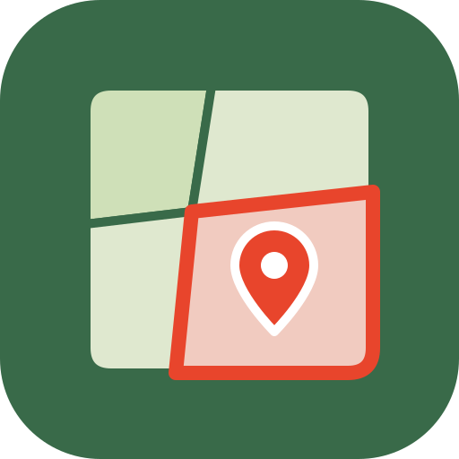

Terra Parcel·les
Política de privadesa
Darrera actualització: 7 de novembre de 2026
Terra Parcel·les és una app per desar les teves parcel·les del cadastre, amb notes, fotos i etiquetes, a la web i a Android. La fa Mario Escuder Nebot (contacte: labellucoapps@gmail.com). L'app no té comptes d'usuari, ni publicitat, ni estadístiques d'ús, i no recull cap dada personal.
Què es desa al dispositiu
Les parcel·les que afegeixes (la geometria i les dades públiques del Cadastre), les teves notes, etiquetes, agrupacions i fotos, l'última vista del mapa, l'idioma i la llista de compres es desen només al teu dispositiu. No s'envien a cap servidor de Terra Parcel·les, perquè no n'hi ha cap. Les pots esborrar des de l'app o esborrant les dades de l'app o del lloc web.
Fotos
Les fotos les tries tu de la galeria o de la càmera, i l'app només veu les que tries. Es redueixen i es desen al dispositiu; no es pugen enlloc.
Serveis públics que consulta l'app
Per trobar les parcel·les i mostrar el mapa, l'app demana dades directament a serveis públics: el Cadastre espanyol, l'IGN (ortofotos), OpenStreetMap (mapa) i EOX (imatges Sentinel-2). Aquestes peticions porten la parcel·la o la zona que consultes i, com qualsevol connexió a internet, la teva adreça IP. Cada servei té la seva pròpia política de privadesa. La web es baixa de Cloudflare Pages, i les biblioteques del codi de unpkg.com i cdnjs.cloudflare.com.
Obrir una parcel·la a les altres apps Terra
Quan obres una parcel·la a Terra Camp, Terra Rutes, Terra Anàlisi o Terra Bloc, l'enllaç només porta la seva referència cadastral, que és una dada pública. Les notes, les etiquetes i les fotos no surten de Terra Parcel·les.
Compres
A l'app d'Android, la compra de la versió Pro la gestiona Google Play. Terra Parcel·les no veu ni desa cap dada de pagament; només rep de Google Play si la compra s'ha fet. A la web, de moment, la compra és de demostració i no es cobra res.
Fitxers que exportes
Els tracks GPX i KML, la llista en CSV i la còpia de seguretat es generen al dispositiu. Tu tries on desar-los o amb qui compartir-los. La còpia de seguretat conté les teves notes i fotos: guarda-la en un lloc de confiança.
Infants
L'app no està adreçada a infants i no en recull cap dada.
Canvis
Si aquesta política canvia, es publicarà aquí amb una data nova. Per a qualsevol dubte, escriu a labellucoapps@gmail.com.
Vegeu també les condicions d'ús.
Política de privacidad
Última actualización: 7 de noviembre de 2026
Terra Parcel·les es una app para guardar tus parcelas del catastro, con notas, fotos y etiquetas, en la web y en Android. La hace Mario Escuder Nebot (contacto: labellucoapps@gmail.com). La app no tiene cuentas de usuario, ni publicidad, ni estadísticas de uso, y no recoge ningún dato personal.
Qué se guarda en el dispositivo
Las parcelas que añades (la geometría y los datos públicos del Catastro), tus notas, etiquetas, agrupaciones y fotos, la última vista del mapa, el idioma y la lista de compras se guardan solo en tu dispositivo. No se envían a ningún servidor de Terra Parcel·les, porque no lo hay. Puedes borrarlas desde la app o borrando los datos de la app o del sitio web.
Fotos
Las fotos las eliges tú de la galería o de la cámara, y la app solo ve las que eliges. Se reducen y se guardan en el dispositivo; no se suben a ningún sitio.
Servicios públicos que consulta la app
Para encontrar las parcelas y mostrar el mapa, la app pide datos directamente a servicios públicos: el Catastro español, el IGN (ortofotos), OpenStreetMap (mapa) y EOX (imágenes Sentinel-2). Estas peticiones llevan la parcela o la zona que consultas y, como cualquier conexión a internet, tu dirección IP. Cada servicio tiene su propia política de privacidad. La web se descarga de Cloudflare Pages, y las bibliotecas del código de unpkg.com y cdnjs.cloudflare.com.
Abrir una parcela en las demás apps Terra
Cuando abres una parcela en Terra Camp, Terra Rutes, Terra Anàlisi o Terra Bloc, el enlace solo lleva su referencia catastral, que es un dato público. Las notas, las etiquetas y las fotos no salen de Terra Parcel·les.
Compras
En la app de Android, la compra de la versión Pro la gestiona Google Play. Terra Parcel·les no ve ni guarda ningún dato de pago; solo recibe de Google Play si la compra se ha hecho. En la web, de momento, la compra es de demostración y no se cobra nada.
Archivos que exportas
Los tracks GPX y KML, la lista en CSV y la copia de seguridad se generan en el dispositivo. Tú eliges dónde guardarlos o con quién compartirlos. La copia de seguridad contiene tus notas y fotos: guárdala en un lugar de confianza.
Menores
La app no está dirigida a menores y no recoge ningún dato suyo.
Cambios
Si esta política cambia, se publicará aquí con una fecha nueva. Para cualquier duda, escribe a labellucoapps@gmail.com.
Consulta también las condiciones de uso.
Privacy policy
Last updated: 7 November 2026
Terra Parcel·les is an app for keeping your cadastral plots, with notes, photos and tags, on the web and on Android. It is made by Mario Escuder Nebot (contact: labellucoapps@gmail.com). The app has no user accounts, no advertising and no usage analytics, and it does not collect any personal data.
What is stored on your device
The plots you add (their shape and the public Cadastre data), your notes, tags, groups and photos, the last map view, the language and the list of purchases are stored only on your device. They are not sent to any Terra Parcel·les server, because there is none. You can delete them in the app or by clearing the app's or the website's data.
Photos
You choose the photos from your gallery or camera, and the app only sees the ones you choose. They are resized and stored on your device; they are not uploaded anywhere.
Public services the app uses
To find plots and show the map, the app requests data directly from public services: the Spanish Cadastre, IGN (aerial imagery), OpenStreetMap (map) and EOX (Sentinel-2 imagery). These requests include the plot or area you look up and, like any internet connection, your IP address. Each service has its own privacy policy. The website is served by Cloudflare Pages, and code libraries by unpkg.com and cdnjs.cloudflare.com.
Opening a plot in the other Terra apps
When you open a plot in Terra Camp, Terra Rutes, Terra Anàlisi or Terra Bloc, the link only carries its cadastral reference, which is public data. Your notes, tags and photos never leave Terra Parcel·les.
Purchases
In the Android app, the Pro purchase is handled by Google Play. Terra Parcel·les never sees or stores any payment details; it only learns from Google Play whether the purchase was made. On the web, for now, the purchase is a demo and nothing is charged.
Files you export
GPX and KML tracks, the CSV list and the backup are generated on your device. You choose where to save them or who to share them with. The backup contains your notes and photos: keep it somewhere you trust.
Children
The app is not directed at children and does not collect any data from them.
Changes
If this policy changes, the new version will be published here with a new date. For any question, write to labellucoapps@gmail.com.
See also the terms of use.